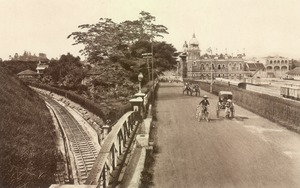
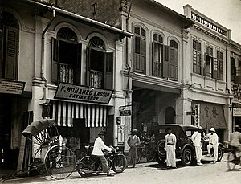
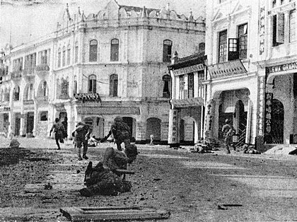

第二次世界大战时，日军于1942年1月11日占领吉隆坡。1945年8月15日，日军将领板垣征四郎向英军投降，吉隆坡结束了44个月的日占时期。
1957年，吉隆坡成为刚从英国独立的马来亚联邦（Federation of Malaya）的首都。当时，第一任首相东古·阿卜杜勒·拉赫曼在吉隆坡的默迪卡体育场（Stadium Merdeka）宣读独立宣言。
1963年成为马来西亚联邦的首都。
1969年5月13日，吉隆坡发生严重的种族冲突，政府颁布紧急状态。
1972年2月1日，吉隆坡正式被授予“大城市”地位，成为马来西亚第一个在独立后获得大城市地位的城市。
1974年2月1日，吉隆坡成为联邦直辖区，从雪兰莪州脱离
1990年5月14日，吉隆坡庆祝100年建立地方议会，并同时推出新的吉隆坡联邦直辖区旗和市歌。
1996年10月1日，吉隆坡塔正式开放，塔高421米（1381英尺），是当时世界第四高塔。
1998年6月27日，吉隆坡国际机场正式启用，是马来西亚最主要的国际机场之一和规模最大的机场，也是全球最繁忙机场之一。
1999年8月31日，双峰塔正式开放，曾经是世界最高的摩天大楼，但后来被台北101和哈利法塔超越。双峰塔仍然是目前世界上最高的双栋大楼，也是20世纪最高的摩天大楼。
2003年8月31日，吉隆坡单轨列车开通，是马来西亚目前唯一营运的单轨铁路列车系统。
|  |  |  | |
|---|---|---|---|
| 摄于1910年左右，铁路的建设刺激了吉隆坡的发展。 | 摄于1915年至1925年左右，吉隆坡街道上的店屋，有扫街车在街道上工作。 | 日军进犯吉隆坡 | 东古·阿卜杜勒·拉赫曼于1957年在吉隆坡的默迪卡体育场宣布马来亚联合邦独立 |